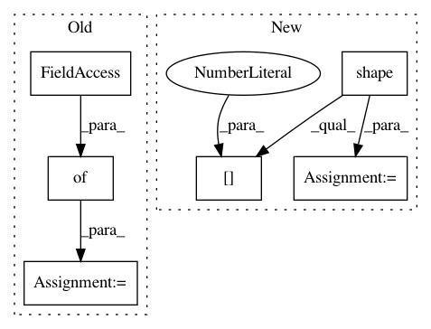

cb29df4dea83d69ef9f5109398b23158a8c680dc,examples/next-frame.py,VideoFrameSampler,_sample,#VideoFrameSampler#,422
Before Change
def _sample(self):
gan = self.gan
z_t = gan.uniform_encoder.sample
next_frame = gan.session.run(gan.next_frame, {gan.last_frame_2: self.last_frame_2, gan.last_frame_1: self.last_frame_1})
self.last_frame_1 = self.last_frame_2
self.last_frame_2 = next_frame
self.i += 1
if self.i > 120:
After Change
//if(1 + self.frames < len(self.x)):
// feed_dict[f] = self.x[1+self.frames]
self.x = sess.run(gan.preview, feed_dict)
frames = np.shape(self.x)[1]//height
self.x = np.split(self.x, frames, axis=1)
x_ = self.x[-1]
time.sleep(0.15)
In pattern: SUPERPATTERN
Frequency: 3
Non-data size: 6
Instances
Project Name: HyperGAN/HyperGAN
Commit Name: cb29df4dea83d69ef9f5109398b23158a8c680dc
Time: 2018-09-25
Author: martyn@255bits.com
File Name: examples/next-frame.py
Class Name: VideoFrameSampler
Method Name: _sample
Project Name: HyperGAN/HyperGAN
Commit Name: 67cadcccf927c93dec42cc9d0c6885d47bbc9eff
Time: 2018-05-25
Author: mikkel@255bits.com
File Name: examples/next-frame-refactored.py
Class Name: VideoFrameSampler
Method Name: _sample
Project Name: idaholab/raven
Commit Name: 0ca2ef263f600ee029f208dfca8fef7b8fe5038b
Time: 2020-08-23
Author: mohammad.abdo@inl.gov
File Name: framework/Optimizers/GeneticAlgorithm.py
Class Name: GeneticAlgorithm
Method Name: _useRealization